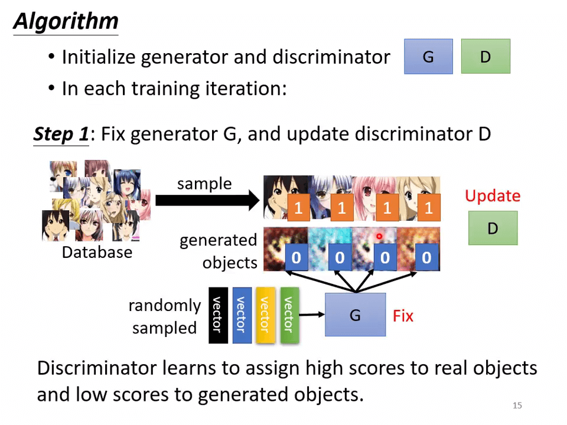
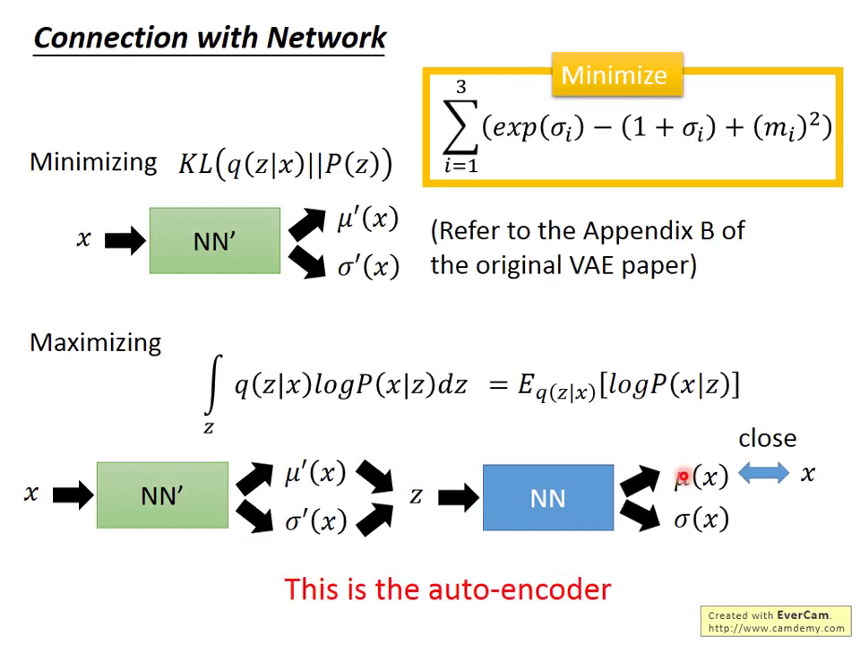

Preparation
【機器學習 2021】生成式對抗網路 -Generative Adversarial Network- GAN- -一- – 基本概念介紹
以生成器作为神经网络：除了有输入 ，还有一个分布 （We know its formulation, so we can sample from it.），输出一个复杂的分布 。
一个根据已知吃豆人图像预测下一时刻的情景的例子，如果使用传统神经网络，下一时刻吃豆人既出现了向左走，也出现了向右走。
给输入添加一个 Simple Distribution ，使输出是一个分布，可以规避这个问题。
同样的输入可能有不同中输出。如 AI 绘画，聊天机器人。
现如今 GAN 已经有了非常多种。
-
Unconditional generation
先把 拿掉，在考虑 Conditional generation 的时候再把 加回来。这样输入只有
Discriminator 本身就是一个神经网络，输入一张图片，输出一个数字，数字越大表示输入的越是真实的二次元图像。
Generator 和 Discriminator 都是神经网络，其架构可以由自己设计。
Basic Idea of GAN
Generator 就好比枯叶蝶，Discrimination 就好比鸟，Generator 不断训练试图不让 Discrimination 识别出来，Discrimination 不断训练试图找到 Generator。
This is where the term “adversarial” comes from.
Algorithm

初始化一个 generator 和一个 discriminator，在每次 training iteration 中：
Step 1 修正 G，更新 D。
D 学习如何将高分分配给真实对象，将低分分配给 G 生成的对象。
Step 2
修正 D，更新 G。
G 学习如何欺骗 D。
实际效果

【機器學習 2021】生成式對抗網路 -Generative Adversarial Network- GAN- -二- – 理論介紹與 WGAN
G 的目标:让生成的 与真实数据的分布 尽可能相近。
其中 表示 和 的相近程度，该如何表示这个 divergence 呢？
我们并无法知道真实的 和 ，但是我们可以从它们中取样。
Discriminator
- ★ 表示从 中取样的数据
- ★ 表示从 中取样的数据
Discriminator 要求正确识别 ★ 和 ★，目标是
最早的 GAN 中 [1406.2661] Generative Adversarial Networks (arxiv.org)：
其中 ，即两个向量的 JS 散度， 要求给 ★ 较大的值，给 ★ 较小的值。
这个公式和二分类交叉损失函数一样，就是把 当作一个二分类器。
目标
- 如果 ★ 和 ★ 有着较小的 divergence，则 较小， 很难识别。
- 如果 ★ 和 ★ 有着较大的 divergence， 容易识别。
GAN 的步骤：
- Initialize generator and discriminator
- ln each training iteration:
- Step 1: Fix generator G, and update discriminator D, 尝试查找
- Step 2: Fix discriminator D, and update generator G, 尝试查找 ，这个值与 JS 散度有关（对最早的 GAN 而言）。
如果我们不使用 JS 散度，而使用其他函数评价 divergence 呢？
JS divergence is not suitable
最早的 GAN 由于使用了 JS 散度，并不好训练
- 在大多数情况下， 和 并不是重叠的。
- 就算能重叠，也只是一小部分几乎能忽略
- 由于取样的存在，就算 和 有一定重叠部分，由于取样个数不够多，机器仍然认为它们不重叠
由于 JS 散度对于两个毫不重叠的分布返回值永远是 ，无法衡量两个不重叠的分布的距离，导致 D 的识别率几乎为 ，并且找不到优化的方向。
Wasserstein distance
引入推土机距离替换 JS，假设两个土堆 和 ，把土堆 推成 需要的距离 即为推土机距离。
把 推成 有着无数中推法，因此要枚举所有的推法找到一个最短的推土机距离作为最终的推土机距离。
推土机距离就可以衡量两个不重叠的分布的相近情况。
让 与 不断接近的过程有点像自然界优胜劣汰的过程。
WGAN
解下面公式的值就是推土机距离：
直白点说就是要足够平滑。
其它对 WGAN 的改进：
- [1704.00028] Improved Training of Wasserstein GANs (arxiv.org)
- [1802.05957] Spectral Normalization for Generative Adversarial Networks (arxiv.org)
目前最好的：Spectral Normalization（SNGAN）
【機器學習 2021】生成式對抗網路 -Generative Adversarial Network- GAN- -三- – 生成器效能評估與條件式生成
训练 GAN 是很有挑战性的：
- 如果 D 不能识别出不同，G 就难以有进步的空间
- 如果 G 不能产生混淆 G 的对象，D 就难以有进步的空间
因此，D 和 G 要“棋逢对手”
关于训练 GAN 的技巧：
-
soumith/ganhacks: starter from “How to Train a GAN?” at NIPS2016 (github.com)
-
[1606.03498] Improved Techniques for Training GANs (arxiv.org)
-
[1809.11096] Large Scale GAN Training for High Fidelity Natural Image Synthesis (arxiv.org)
GAN for Sequence Generation
在 GAN 应用于序列生成时，这尤为困难，D 难以找到一个方法评估 G 生成的序列。可以用强化学习的方法优化。
而 RL 和 GAN 都是很难训练的东西，就会导致这类问题非常困难。
- [1905.09922] Training language GANs from Scratch (arxiv.org) 使用了暴力搜索超参数的方法使用 GAN 用于文本生成。
Generative Models
生成模型不只有 GAN，还有 VAE，FLOW-based Model 等，但是 GAN 目前表现的性能最好。
Possible Solution？
使用 Supervised Learning 的方法解决生成问题：把原始图片用一个向量来表示，放到 NN 中训练：
- [1707.05776] Optimizing the Latent Space of Generative Networks (arxiv.org)
- [2007.02798] Gradient Origin Networks (arxiv.org)
Quality of Image
在早期的生成模型评估中，都是用人为主观衡量其性能，有没有办法用计算机来衡量？
作业 6 中，把生成的动漫人物图像放到一个人脸检测系统中，根据识别出的人脸数量来衡量其性能。
把生成的图片 放到一个图像分类其中，根据输出的分布 衡量生成模型的性能。
Diversity-Mode Collapse
可能导致的问题：Mode Collapse。生成的图片在判别器中很接近真实图片，但人为认定很明显不是真实图片。
Diversity-Mode Dropping
可能导致的问题：Mode Dropping。生成的图片不具代表性，总是集中在一类中。
Diversity

要想让生成的图片避免出现 Mode Dropping，将生成的图片 放到分类器中产生分布 ，以 表示生成图片的多样性。
Quality 跟 Diversity 评估的范围不同：Quality 对一张图片来说，Diversity 对所有图片来说。
用 IS 来评估生成器的性能：Good quality, large diversity → Large IS
FID
FID 是从原始图像的计算机视觉特征的统计方面，来衡量两组图像的相似度，是计算真实图像和生成图像的特征向量之间距离的一种度量。 这种视觉特征是使用 Inception v3 图像分类模型提取特征并计算得到的。FID 在最佳情况下的得分为 0.0，表示两组图像相同。分数越低代表两组图像越相似，或者说二者的统计量越相似
FID 分数常被用于评估由生成对抗网络（GAN）生成的图像的质量，较低的分数与较高质量的图像有很高的相关性。

FID 越小越好，论文[1711.10337] Are GANs Created Equal? A Large-Scale Study (arxiv.org)评估不同种生成模型的性能。
We don‘t want memory GAN.
FID 的缺陷：如果 GAN 生成的东西跟数据库里的一模一样，而没有“想象力”，FID 会极小，但仍不是我们想要的。
To learn more about evaluation…
论文[1802.03446] Pros and Cons of GAN Evaluation Measures (arxiv.org)展示了各种衡量生成模型性能的指标。
Conditional GAN
之前讲的都是 Unconditional GAN，此时引入限定条件 ，比如要求模型输出红眼睛，黑头发等。
在 Conditional GAN 中，要有点不一样的设计，D 不仅要 G 生成出来的图片 作为输入，还要条件 ，不仅 质量要好，还要符合 的限定条件，这需要一定的有标注的资料。
图像转图像问题：supervised learning 可能生成图像的质量不好，而 GAN 可能“画蛇添足”，GAN+supervised learning 可以结合起来用。
语音转图像问题。
生成动态图片：[1905.08233] Few-Shot Adversarial Learning of Realistic Neural Talking Head Models (arxiv.org)
【機器學習 2021】生成式對抗網路 -Generative Adversarial Network- GAN- -四- – Cycle GAN
Unsupervised learning 问题，数据并没有被打上标签。
如图像风格迁移就是一个 Unsupervised learning 问题，比如把真人转换成动漫人物。
Can we learn the mapping without any paired data?
Unsupervised Conditional Generation
尝试训练一个 G，输入 Domain 的分布，输出 Domain 的分布。
如果使用传统的 GAN 让它输入一张真实图片输出一张二次元图片，D 只判别输出的图片是否属于 ，会导致 G 无视输入。
Cycle GAN 试图解决这种问题， 生成完 Domain 的图片后，再设计一个 ，使返回的 Domain 的图像尽可能相近。
判定 生成的对象是否属于 domain ， 判定 生成的对象是否属于 domain 。
这个思想几乎在同一时间被提出。
- [1703.05192] Learning to Discover Cross-Domain Relations with Generative Adversarial Networks (arxiv.org)
- [1704.02510] DualGAN: Unsupervised Dual Learning for Image-to-Image Translation (arxiv.org)
- [1703.10593] Unpaired Image-to-Image Translation using Cycle-Consistent Adversarial Networks (arxiv.org)
可以转换多种风格。
把照片转成二次元图像的网站：Selfie2Anime
- [1907.10830] U-GAT-IT: Unsupervised Generative Attentional Networks with Adaptive Layer-Instance Normalization for Image-to-Image Translation (arxiv.org) 用到的原理不是 Cycle GAN
文字风格转换。
其他应用
- Unsupervised Abstractive Summarization
- Unsupervised Translation
- Unsupervised ASR
- [1804.00316] Completely Unsupervised Phoneme Recognition by Adversarially Learning Mapping Relationships from Audio Embeddings (arxiv.org)
- [1812.09323] Unsupervised Speech Recognition via Segmental Empirical Output Distribution Matching (arxiv.org)
- [1904.04100] Completely Unsupervised Speech Recognition By A Generative Adversarial Network Harmonized With Iteratively Refined Hidden Markov Models (arxiv.org)
Extra Material
Theory of GAN (part 1)
GAN 的应用场景：生成图像。
假设 是图像上的某个像素点，我们需要生成一张图片，就是找到 的分布 （区域中蓝的为 分布的 High Probability，以外的为 Low Probability）。
在 GAN 出现之前，使用的是 Maximum Likelihood Estimation.
可以用数学证明最大似然估计法就是最小化两个分布的 KL 散度。
给定一个输入 服从某些分布，在经过生成器 后得到输出 服从分布 ， 的目标是让生成的分布 与目标分布 尽可能相似，即 的目标：。
虽然我们没有办法得到 和 的真实分布，但是我们可以从中采样。
就是用来评估 生成的分布的质量的。假设 是一个神经网络，接受输入 ，输出 ，损失函数：
这跟二分类的交叉损失函数是一回事。
训练 时的目标：
就是一种 JS 散度。小的散度会使得 难以区分，反之容易区分。
推导 与 JS 散度的关系…得出结论 与 是一回事。
表示 JS 散度， 的目标是就是让 的最大值尽可能地小，即 ，因此上图中 的性能最优秀。
的目标：， 的目标：
训练步骤：
- 初始化 和
- 在每个训练 iteration:
- 定住 ，只 train
- 定住 ，只 train
下面用 代替 ，通过梯度下降，就可以找出最小的 。
考虑到 中有 max，该怎么求梯度呢？也可以做，分段求解。
横坐标是 ，纵坐标是 。每做一步梯度下降，要重新确认一下，当前的 对应的是哪个 。这个过程在下面的介绍中，就是交替地固定 和 ，分别计算梯度和寻找最优解。这个过程，也就和 GAN 的训练过程是一致的了。
不要训练太多次 。
理论上，我们希望可以获得 和 对应的期望值，但是，在真实的训练过程中，都是用真实的 sample 来计算均值来代替。另外， 的过程，其实，等同于训练一个 binary classifier。
能够训练出一个 binary classifier，也就达到最大化 的目的了。分类问题，用的 Loss 是 cross-entropy。
的作用是量出 JS Divergence， 的作用是要 minimize JS Divergence.
在 Ian Goodfellow 的实现版本中， 的实现，并没有采用上面的 式子，而是采用了 。
潜在的两点理由：
-
初始斜率更大，训练可能会更快一些；
-
代码实现上可以重复利用。
直观的感受， 的作用是将 的分布赶来赶去， 尽可能与 Data 分布一致，让 无法区分。
动图：Simple Generative Adversarial Network (GAN) - YouTube
我们可以考虑鉴别器作为评估函数吗？
Theory of GAN (part 2)
fGAN: General Framework of GAN 一种通用的 GAN 框架
f-divergence
和 是两个分布，， 分别是样本 从分布 和分布 取样出来的几率，那么对于任意 ：
如果 满足：
- 是凸函数
那么只要 和 有差异，。
就是一个 divergence，衡量的是 和 的差异。
如果 ，那么 就是 KL 散度。
如果 ，那么 就是 Reverse KL。
如果 ，那么 就是卡方检验。
Fenchel Conjugate 共轭函数
每一个凸函数都有一个共轭函数（Fenchel Conjugate），记为 ：
带一个值 到 里面，穷举所有的 ，看看哪个 可以使得 最大。
Connection with GAN
这个 取决于 f-divergence 是什么。
可以选用不同的 f-divergence，优化不同的 divergence，论文 [1606.00709] f-GAN: Training Generative Neural Samplers using Variational Divergence Minimization (arxiv.org) 里面给了个清单，可以自己选。
那么使用不同的 divergence 会有什么用处吗？它可能能够用于解决 GAN 在训练过程中会出现的一些问题（众所周知 GAN 难以训练）
Mode Collapse
指的是 GAN 产生的样本单一，认为满足某一分布的结果为 True,其余为 False。如下图，原始数据分布的范围要比 GAN 训练的结果大得多。从而导致 generator 训练出来的结果可能都差不多，图片差异性不大。
Mode Dropping

假设原始分布有两个比较集中的波峰，而 GAN 有可能把分布集中在其中一个波峰，而抛弃掉了另一个。
Theory of GAN (part 3)
JS divergence is not suitable
JS divergence 其实存在一个非常严重的问题，根源在于 generation data 的分布和 real data 的分布往往是没有任何重叠的，这个没有任何重叠的问题是由以下两个因素导致的：
- data 本质导致。Data 本身，我们认为是一个图像是一个高维空间中的一个点，Pdata 和 PG 在这个高维空间中都是属于 low-dim manifold。所以基本是不存在重叠的部分的。
- 实际操作的时候，我们是先进行的采样，然后再用 discriminator 去量他们之间的 divergence，而且采样的样例也不会太多。所以离散的采样也会导致，两堆采样的点基本上是不可能重叠的，应该是没有交集的
如果这个判别器训练的太好的话呢，就会导致如下图所示的红色实线的情况，蓝色点上方的区域导数都是零，这就会使的 Generator 在梯度下降的时候，没法继续下去，generated data 也就没法像 real data 靠近。如果这个判别器训练的不行的话，又很容易导致分辨不出两组 data。所以，在原始 GAN 早期，训练是比较不容易的一件事情。因为你没有办法去分辨，到底什么是训练的太好，什么是训练的不行。
Wasserstein GAN (WGAN): Earth Mover’s Distance
相比于原始的 GAN，就是把原来用来衡量的 JS divergence 换成了 Earth Mover’s Distance.
一个更为官方与公式化的定义，我们可以把一个 moving plan 表示成像左图一样的一个矩阵，对应的交叉的区域就表示该块挪动的量。那么你会发现，左边矩阵中每一行值相加应该都会等于其对应的 P 的那一条区域的值，每一列值相加起来都会等于其对应的 Q 的那一条区域的值。所以，给定这样一个 moving plan，应该怎么去计算这个方案对应的移动距离呢？就用到下图中 B(γ)的公式，遍历所有的 xp 和 xq，其实就是遍历矩阵的每一个值，然后做乘积、求和。
那么在训练过程中,WGAN 到底应该如何使用 Earth Mover’s Distance 呢?
我们将原来的 函数替换成
实际上 1-Lipschitz 函数是什么呢?定义如上: 右边蓝色函数就不是,而绿色函数就是
原始的方法就是使用 Weight Clipping 方法,但是其实这个方法并没有完全能够限制住 D 是一个 1-Lipschitz 函数,但可以相对来说让你的 D 变得平滑一些.
Energy-based GAN (EBGAN)
其与原始 GAN 唯一的不同在于其修改了 DIscriminator 的架构，Discriminator 原本来说是一个 Binary Classifier，但是在 EBGAN 中，将其变成了一个 Auto Encoder 自动编码器，Generator 是跟原来一样的。
整一个 Discriminator 仍旧会输出一个 Scalar 分数，但现在这个分数是从何而来的呢？他是基于 Auto Encoder 的重建误差得到的。之所以这样做，EBGAN 是基于以下一个假设的：越真实的 Image 它经过 AutoEncoder 以后，重建误差越小，越虚假的 Image 重建误差越大。那么 EBGAN 的好处在于这个 Discriminator 是可以预训练的，因为 AutoEncoder 的训练并不需要用到 negative 的样例。只需要给 positive 的样例，然后最小化重建误差就可以了。
VAE
Why VAE？
VAE 所做的就是在生产的 code 上加入噪音，如果两张图之间的噪音有重叠的地方，那这个地方去复原照片，既要像第一张照片，又要像第二张，所以可能就会产生一半一半的照片，也就是插值图片。
Auto-Encoder（简称 AE）的 NN Encoder 将输入转换为 code，再通过 NN Decoder 产生输出，要求 input 与 output 尽可能相近。
VAE 的 NN Encoder 除了产生 code（），还产生噪音（方差）（），通过 运算保证是正的。
是从正态分布采样出来的，方差为 1。
NN Encoder 产生的最终输出（）：
NN Encoder 的目标 Minimize reconstruction error：，之后只要使得 input 和 output 越接近越好。但是这样的话，Encoder 可能就会直接把方差学成 0，也就是没有噪音了，就变成 AE 了。自然也学不出中间的插值了。所以要对方差做个限制，即对 做限制， 是正则化惩罚项，避免过拟合。
VAE 有啥用？用宝可梦来做例子，将高维宝可梦的图映射到一维上，我们要的就是一个概率分布 ，可以根据它来采样小精灵了，几率高的地方就是好的图。那怎么来获得这个概率分布呢，可以用传统 GMM，就是高斯混合模型，简单来说就是用很多个高斯分布的组合来拟合一个分布。
Gaussian Mixture Model
可以表示成 N 个高斯分布的组合，不同的高斯分布有不同的权重和参数，然后堆叠起来就是 。GAN 直接学习分布。
生成的每个 x 都来自混合分布式表示比聚类更好。
VAE
VAE 用 服从的某个高斯分布，关联到高斯混合模型里去。我们可以有个向量 ，服从高斯分布，则在 的情况下采样出 的概率服也从某个高斯分布，这个高斯分布的参数跟 有关。
每个 对应采样出来的 对应着一个高斯模型 ，至于高斯模型的参数，是跟 有关的即 ，，由 NN 生成。因为 是连续的，所以我们有无穷多个高斯模型，从 映射到某个高斯模型能采样 ，用这些高斯模型堆叠出来就是个 。所以我们可以有 。
Maximizing Likelihood
用最大似然估计法去估计 ， 服从高斯分布， 也服从某个高斯分布，估计参数即可。同时我们需要另外一个分布 ，在 下的 的高斯分布参数。刚好可以看做 Encoder 和 Decoder。

To learn more
- Carl Doersch, Tutorial on Variational Autoencoders
- Diederik P. Kingma, Danilo J. Rezende, ShakirMohamed, Max Welling,“Semi-supervised learning withdeep generative models.” NIPS, 2014.
- Sohn, Kihyuk, Honglak Lee, and Xinchen Yan, “LearningStructured Output Representation using Deep ConditionalGenerative Models.” NIPS, 2015.
- Xinchen Yan, Jimei Yang, Kihyuk Sohn, Honglak Lee,“Attribute2lmage: Conditional lmage Generation from VisuaAttributes”, ECCV 2016
- Cool demo:
Problems of VAE
VAE may just memorize the existing images, instead of generating new images.
FLOW-based Model
- 基于流的生成模型-Flow based generative models - 知乎 (zhihu.com)
- 李宏毅——Flow-based Generative Model_shaoyue1234 的博客-CSDN 博客
其他生成模型的问题：
- component-by-component
- 什么是最好的顺序？
- 生成速度慢
- VAE
- 优化的是 low bound，不是最终目的
- GAN
- 难以训练
- Generator：
- 是一个网络，定义了一个概率分布 ， 比较复杂，可以直接用 Flow-based model 来直接优化目标。
Flow-based model directly optimizes the objective function. 基于流的模型直接优化目标函数 。
Math Background

Flow-based Model 及其依赖数学，其数学背景：
- 雅可比矩阵、行列式、Change of Variable Theorem
Jacobian Matrix
假设向量 、，且 和 满足关系 ，那么雅可比矩阵 可用 对 的偏微分来表示。
Determinant
行列式。
几何意义、面积或体积。
Change of Varible Theorem
研究 的分布 和 的分布 的关系。
让蓝色方块和绿色方块有着相同的面积。
最后推导出结论：
Formal Explanation
假设做 image 的生成，输入的 也应该是 的，但不能保证 可逆， 的能力是有限的。
叠加多个 生成更复杂的分布。
训练时，训练 ，实际生成时使用 。
使用 Coupling layer，被用在两个知名的 flow-base 模型 NICE [1410.8516] NICE: Non-linear Independent Components Estimation (arxiv.org) 和 NVP [1605.08803] Density estimation using Real NVP (arxiv.org) 中。
把 拆成两组，前 维和后面的部分， 的前 维等于 的前 维直接复制过去。 用一个 function F 把前 维变化成后面的维数，另一个 function H 也变成后面的维数。

Demo
结合两个人的特征，生成新的图片。
通过训练笑的人脸和不笑的人脸，相减得到笑脸向量 ，就可以得到让一个人笑的生成器。
Flow-based Generative Model 主要用在语音生成上：